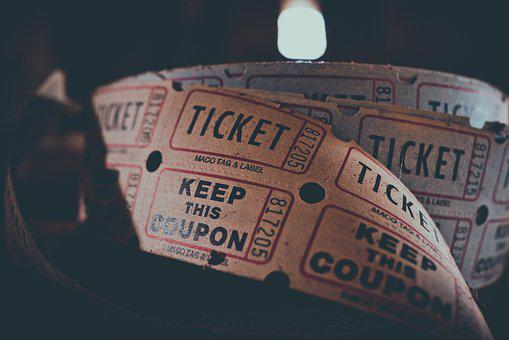

I'm taking this class because I have always been interested in learning how to code. I thought this would be a good place to start. After the first class I became interested in making a website too.
I like hanging out with my friends and trying to be active when I can.
One of my favorite things to do is go ride my bike. I just got a new bike for my birthday and I have been enjoying going on rides with my brother. I enjoy riding my bike and it is a healthy way to have fun.
Another hobby I have is going to the movies. My friends and I love going to the movies. We try seeing as many new movies as we can. It's a fun way to get together and we always have a good conversation about the movie afterwards. Movies are a fun pass time and for the most part are very enjoyable.
My biggest hobby would probably be playing video games. I enjoy playing with my friends, but sometimes I like just playing a solo game. It's a fun way to immerse yourself and take your mind off things. It also is a good way to keep in touch with your friends. During Covid me and my friends were able to play a lot together bonding more on games when we couldn't see eachother.
Mchenry County College